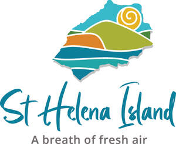
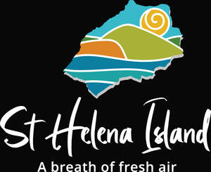

Trade Mark Journal No.2025/031 1 August 2025
UK00004238281 23 July 2025 (16,21,25,35,39,41,43)
Mark 1
Mark 2
Mark 3

Mark 4
Mark 5
Mark 6

- Class 16
- Printed educational materials; Printed promotional material; Printed brochures; Printed booklets; Printed pamphlets; Printed flyers; Printed leaflets; Maps; Posters; Guide books.
- Class 21
- Souvenir plates; Mugs; Water bottles; Coasters (tableware); Drinking glasses; Figurines [statuettes] of porcelain, ceramic, earthenware or glass.
- Class 25
- Baseball caps; T-shirts; Polo shirts; Clothing; Hooded sweat shirts; Jackets.
- Class 35
- Advertising in the field of tourism and travel; Advertising services relating to the travel industries; Promotion [advertising] of travel; Advertising services relating to the marine and maritime industry; Marketing services in the field of travel; Organisation of exhibitions for business or commerce; Advertising services relating to the transport industries; Promotion [advertising] of business; Business promotion services; Business marketing services; Advertising services to promote public awareness of the benefits of shopping locally; Marketing services in the field of restaurants; Organisation of exhibitions and trade fairs for commercial and advertising purposes.
- Class 39
- Tourist travel reservation services; Tourist guide services; Provision of tourist travel information; Providing tourist travel information; Transportation of travellers; Travel agency services, namely arranging transportation for travelers; Transport services for sightseeing tours; Organisation of city sightseeing; Services for the arranging of excursions for tourists; Travel and passenger transportation; Travel agency services, namely, making reservations and bookings for transportation; Travel agency services for arranging holiday travel; Organisation of travel tours; Booking agency services for sightseeing tours; Travel and transport reservation services; Travel services; Providing tourist travel information, via the Internet; Booking of holiday travel and tours.
- Class 41
- Education courses relating to the travel industry; Educational courses relating to the travel industry; Hospitality services (entertainment); Leisure park services; Provision of visitor attractions for cultural purposes; Providing education courses relating to the travel industry; Rental services relating to equipment and facilities for education, entertainment, sports and culture.
- Class 43
- Tourist inns; Tourist restaurants; Tourist agency services for booking accommodation; Tourist hostels; Tourist camp services [accommodation]; Tourist home services; Tourist homes; Reservation of tourist accommodation; Providing travel lodging information services and travel lodging booking agency services for travelers; Hotels, hostels and boarding houses, holiday and tourist accommodation; Travel agency services for booking restaurants; Arranging of accommodation for tourists; Hospitality services [accommodation]; Travel agency services for booking accommodation; Travel agency services for reserving hotel accommodation; Travel agency services for making hotel reservations.
St Helena Government
Representative: The St Helena Government UK Office